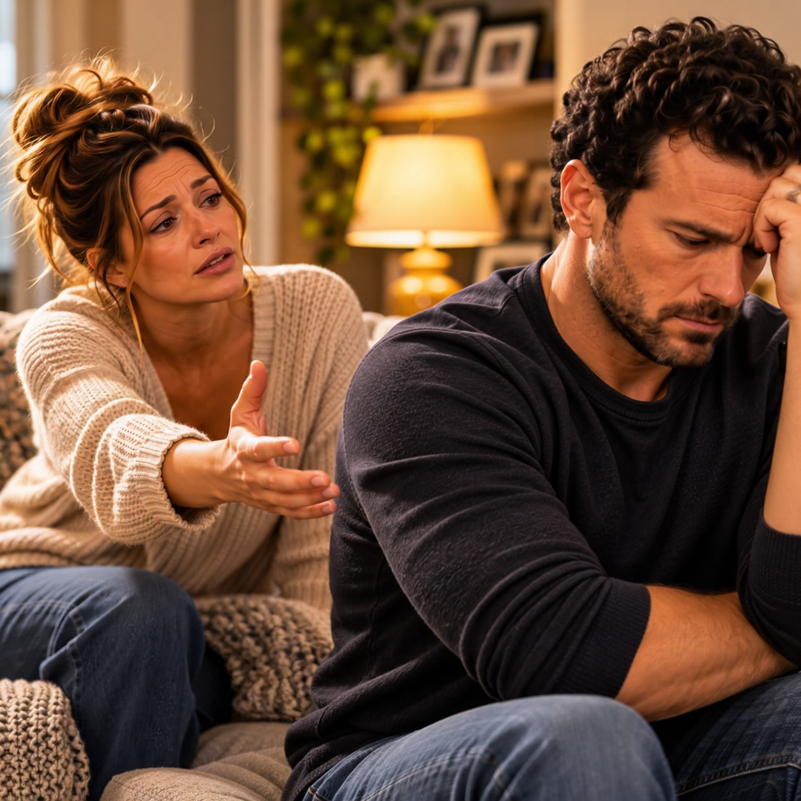
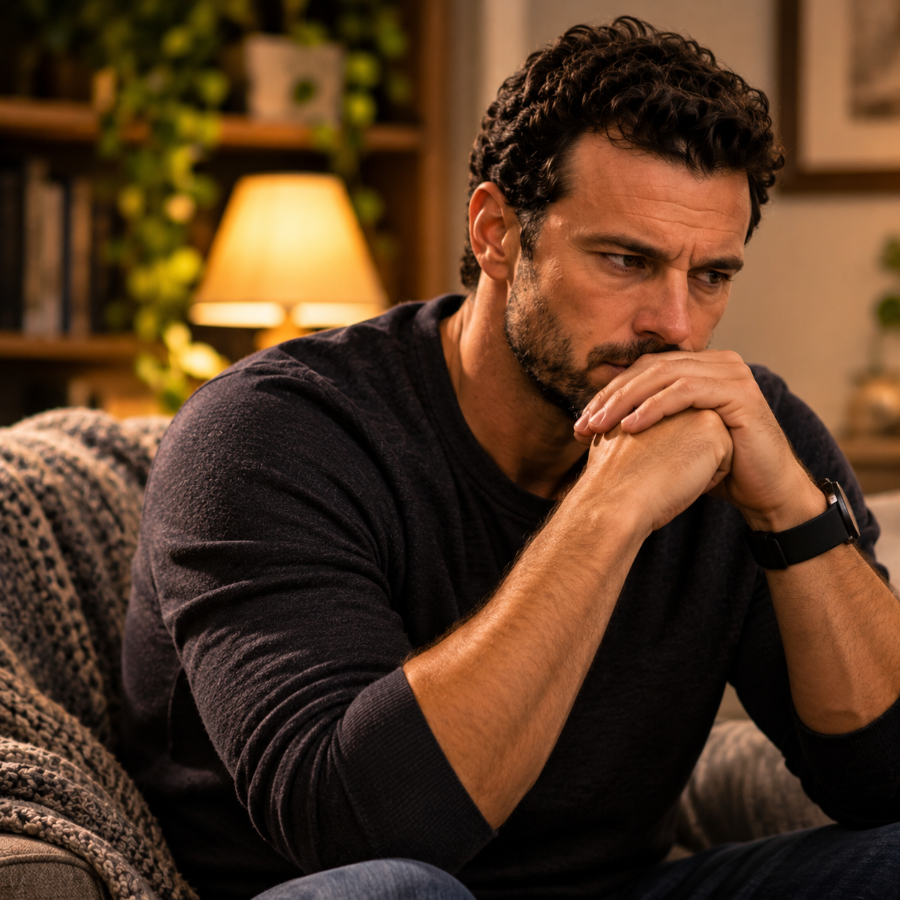
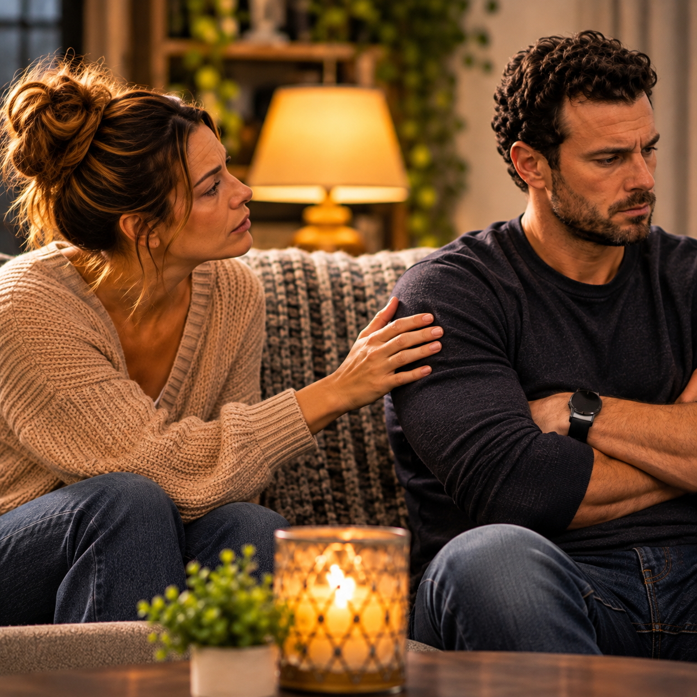

Sometimes the loudest part of a disagreement is what happens after the words stop.
The argument may be over, the voices may have settled, and both people may have returned to their usual surroundings, but something still feels different. The atmosphere has changed, and even the smallest interaction can carry the weight of what was left unresolved.
One person may sit quietly, replaying everything that was said. The other may try to move forward as though the disagreement is behind them. They may continue with their daily routines, prepare something to eat, watch television, or scroll through their phones, but neither feels entirely comfortable.
They are together, yet something separates them.
It is possible to share the same room, sleep in the same bed, and go through the same daily routines while feeling emotionally disconnected from the person beside you. Physical closeness does not always mean emotional closeness, especially when hurt and disappointment have not been addressed.
Sometimes the distance begins with one conversation that went badly. Other times, it develops gradually through repeated disagreements, unanswered questions, and moments when one person feels that speaking honestly will only make things worse.
Whatever the beginning, silence can become a place where people hide feelings they have not learned how to express.
The Morning After an Argument
Imagine two people waking up the morning after a difficult disagreement.
The room is quiet. One person gets up and begins preparing for the day. The other remains in bed for a few extra minutes, thinking about what happened the night before.
They may both remember the same argument, but their thoughts are not necessarily the same.
One person may be thinking about the words that were spoken and wishing the conversation had gone differently. They may regret raising their voice or saying something they did not really mean. They may want to apologize but feel uncertain about whether the other person is ready to talk.
The other may still be thinking about the original concern. They may feel that the argument distracted from what they were trying to communicate in the first place. Perhaps they are waiting for an acknowledgment that never came, or they are wondering whether bringing it up again will lead to another disagreement.
Eventually, one person asks, “Are we okay?”
The response comes quietly.
“We’re fine.”
But the answer does not settle anything. It simply allows the morning to continue without another conversation.
They may exchange a few ordinary words, discuss what needs to be done that day, and go about their responsibilities. To someone looking from the outside, nothing may appear unusual. Yet both may be carrying feelings that have not been addressed.
The silence has become part of the relationship’s routine, even though neither person may want it to remain there.
When Silence Is a Way of Protecting Yourself
Not everyone responds to conflict by talking immediately. Some people need time to process what happened before they can explain themselves. They may become quiet because they are overwhelmed, frustrated, or afraid that continuing the conversation will lead to words they cannot take back.
There is nothing inherently wrong with needing space.
In fact, taking a break can prevent a disagreement from becoming more hurtful. When emotions are running high, people may struggle to listen carefully or express themselves clearly. A little distance can provide the opportunity to calm down, consider what happened, and return to the conversation with a better understanding of what needs to be said.
The important distinction is whether the silence creates space for a healthier conversation or becomes a substitute for having one.
There is a difference between saying, “I need some time to collect my thoughts, but I want us to talk about this later,” and disappearing emotionally without any explanation. The first communicates a boundary while keeping the relationship open to resolution. The second leaves the other person uncertain about whether the issue will ever be addressed.
When someone does not know what to expect, their mind may begin searching for answers. They may wonder whether the other person is still upset, whether they have done something unforgivable, or whether the relationship is slowly falling apart.
For someone who already struggles with overthinking, that uncertainty can become especially difficult.
They may begin examining every interaction, trying to determine whether the silence means anger, disappointment, rejection, or simply a need for time. Without communication, even ordinary behavior can become difficult to interpret.
Sometimes the most considerate thing a person can do is explain that they need space without making the other person feel abandoned.
When Silence Becomes a Form of Control
Silence can also be used differently.
There are moments when a person deliberately withholds communication to make someone else uncomfortable, force an apology, or gain control over a disagreement. They may refuse to acknowledge the other person, ignore reasonable attempts to communicate, or remain distant until the other person gives in.

This is not the same as taking time to process emotions.
When silence is repeatedly used to punish someone, it can create an unhealthy emotional environment. The person on the receiving end may begin feeling responsible for restoring peace, even when they do not fully understand what went wrong. They may apologize simply to end the discomfort, agree to things they do not believe, or stop expressing concerns because they fear being shut out again.
Over time, they may begin measuring their words carefully, not because they have learned healthier communication, but because they are afraid of what will happen if they say the wrong thing.
That is not a healthy foundation for a relationship.
No one should have to earn the right to be acknowledged after a disagreement. Respectful communication does not require immediate agreement, but it does require a willingness to treat the other person with basic consideration.
There must be room to step away without using that distance as a weapon.
The Stories We Create in the Quiet
Silence leaves room for interpretation, and people often fill that space with explanations of their own.
When someone does not respond, we may assume they do not care. When they avoid a conversation, we may believe they are hiding something. When they seem distant, we may conclude that their feelings have changed.
Sometimes those conclusions are accurate. Other times, they are influenced by fear, previous experiences, or information we do not yet have.
A person may be quiet because they are mentally exhausted. They may be dealing with work pressures, financial concerns, family responsibilities, or personal struggles they have not found a way to discuss. Their withdrawal may have little to do with the relationship, although the person beside them may experience it as rejection.
At the same time, someone cannot expect their partner to understand every unexplained change in behavior. If they need time alone, they can communicate that. If something outside the relationship is weighing on them, they can explain that they are struggling without feeling obligated to reveal every private detail.
Understanding another person’s need for space does not require ignoring the effect that prolonged silence has on the relationship.
Both people must recognize that what happens internally does not always remain private in its consequences. When someone withdraws without explanation, the person beside them may be left trying to understand a situation they cannot see.
The responsibility is not to share every thought. It is to communicate enough that silence does not become the only explanation available.
When One Person Keeps Reaching and the Other Keeps Withdrawing
One of the most difficult patterns in relationships develops when one person repeatedly tries to resolve a disagreement while the other repeatedly withdraws.
The person seeking conversation may become increasingly anxious as the distance continues. They may ask questions, request reassurance, or attempt to revisit the subject because they want to know where things stand.
The other person may experience those attempts as pressure. They may feel that there is no room to think, that every quiet moment leads to another discussion, or that they are being expected to provide an answer before they are emotionally ready.
The more one person reaches, the more the other withdraws. The more the other withdraws, the more urgently the first person tries to reconnect.
Neither may recognize how their reactions are reinforcing the pattern.

This does not mean that the person seeking communication is wrong for wanting resolution, nor does it mean that the person needing space is wrong for wanting time. The difficulty comes when neither person communicates what they need in a way the other can understand.
One might say, “I don’t want us to go through the entire day without addressing what happened. I need to know that we are going to talk about it.”
The other might respond, “I want to work through this, but I am overwhelmed right now. Can we come back to it tonight when I can give you my full attention?”
Those statements offer something that silence alone cannot provide: clarity.
They allow one person to know that the relationship has not been abandoned, while allowing the other the time needed to process the disagreement.
However, the promise to return to a conversation must mean something. If someone continually postpones important discussions without ever addressing them, the request for space eventually becomes another form of avoidance.
Healthy communication requires follow through.
Being Together Is Not the Same as Feeling Connected
Emotional distance can be especially confusing when two people spend much of their time together.
They may share meals, watch the same programs, run errands, and make plans for the future. They may talk throughout the day about ordinary responsibilities, yet rarely discuss what they are actually feeling.
Their conversations become focused on what needs to be done rather than how they are doing. They know what time the other person has to leave, what needs to be purchased, and what responsibilities need attention, but they may not know what has been weighing on the other person’s mind.
Over time, the relationship can begin to feel more like a shared routine than an emotional partnership.
This does not mean every evening needs to include a serious conversation. Healthy relationships also need laughter, ordinary moments, shared interests, and the freedom to enjoy one another without constantly examining the relationship.
But connection requires some willingness to move beyond the practical details of everyday life.
Sometimes it begins with a simple question asked with genuine interest. How has your day really been? Is there anything you have been thinking about lately? Is something bothering you that we have not had a chance to discuss?
The value of those questions is not in how often they are asked, but in whether the person asking is willing to listen to the answer.
Emotional closeness grows when people feel that their experiences matter to one another.
The Things That Remain After the Silence
Unresolved disagreements rarely stay confined to the moment in which they happened.
A person who repeatedly feels dismissed may eventually stop bringing up concerns. Someone who repeatedly feels criticized may begin avoiding conversations altogether. Both may believe they are preventing another argument, but they may actually be allowing emotional distance to become more established.
The person who stops speaking may tell themselves that there is no point in explaining anything anymore. The person who stops asking questions may believe that leaving the subject alone is the best way to keep things peaceful.
Eventually, they may become accustomed to living around problems rather than addressing them.
This is a difficult place to reach because the absence of arguments can create the appearance that things have improved. Yet the relationship may have become quieter without becoming healthier.
Peace is not simply the absence of disagreement. It also involves the ability to communicate honestly, acknowledge concerns, and resolve problems without fear of retaliation or humiliation.
Sometimes the greatest warning sign is not how often two people argue, but how little they feel able to say to one another.
Finding a Way Back to Conversation
Reconnecting after a disagreement requires more than waiting for time to pass. It requires a willingness to return to the subject with a different purpose.

Instead of beginning with everything the other person did wrong, each person can consider what they want the conversation to accomplish. Are they looking for an apology, an explanation, reassurance, a change in behavior, or simply an opportunity to be heard?
Knowing what needs to be addressed can prevent the conversation from becoming another exchange of accusations.
It also helps to recognize that reconciliation does not always happen immediately. Someone may need time to rebuild trust after being hurt, and an apology does not obligate them to feel better instantly. Meaningful change takes consistency, especially when the same problem has occurred repeatedly.
The person who caused harm must be willing to demonstrate change rather than demand immediate forgiveness. The person who was hurt must also be allowed to decide what they need in order to feel safe and respected.
There are situations in which communication can help repair a relationship, and there are situations in which the distance reveals problems that cannot be resolved by one person’s effort alone.
Both realities deserve honesty.
The goal should never be to restore the appearance of closeness while ignoring the reasons the distance developed in the first place.
Looking Beneath the Surface
Consider what your silence communicates when you are hurt. Are you taking time to understand your emotions, or are you hoping the other person will recognize how much pain they have caused without having to explain it?
When someone you love becomes quiet, do you allow them reasonable space, or do you immediately assume their silence means rejection? Have you established a way to return to difficult conversations, or do disagreements tend to disappear without ever being resolved?
Also consider whether you have ever used silence to avoid accountability or to make someone else feel the weight of your disappointment. It can be uncomfortable to recognize those patterns, but understanding our behavior is necessary if we expect our relationships to improve.
A person should be able to say that they need time without making someone else feel abandoned. A person should be able to ask for communication without demanding that every concern be resolved immediately.
Both people deserve consideration, and neither should have to sacrifice their emotional well-being to maintain the appearance of peace.
When the Silence Finally Speaks
There comes a point when silence begins revealing what words have failed to address.
It may reveal that someone has been afraid to express disappointment. It may reveal that another person has become accustomed to avoiding difficult conversations. It may expose expectations that were never discussed, hurt that was never acknowledged, or a growing realization that the relationship needs something different.
Whatever the silence reveals, it deserves attention.
Two people cannot remain emotionally connected by simply sharing the same space and hoping that unresolved feelings will eventually disappear. They must be willing to recognize the distance, understand how it developed, and decide whether they are both prepared to do the work required to reconnect.
Sometimes that work begins with an apology. Sometimes it begins with a difficult question. Sometimes it begins with admitting that neither person knows how to move forward without learning a different way to communicate.
The important thing is that someone finally becomes willing to open the conversation again.
Because silence may prevent an argument for a little while, but it cannot answer the questions that remain between two people.
And when those questions continue to go unanswered, the distance can become something neither person remembers how to cross.